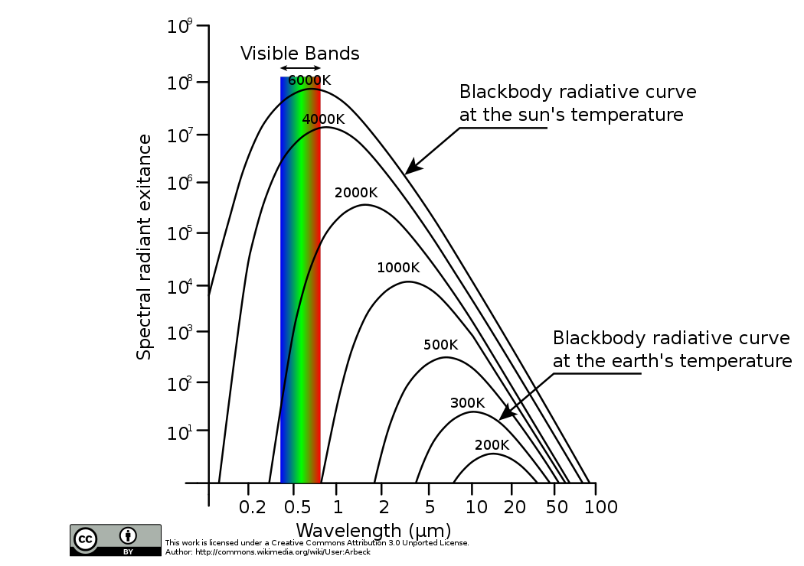

Le but de ce TP est d'aborder les diffrentes notions et tapes du traitement de donnes dans le cadre d'observations spectroscopiques. La mthodologie peut ensuite tre applique un vaste champ d'observations spectroscopiques en astronomie (tude d'toiles, de plantes...) dont quelques exemples seront explors au cours de cette sance.
Ce notebook fait office de compte-rendu. Vous complterez le code et rdigerez vos rponses directement dessus, afin de rendre un notebook par groupe la fin de la sance.
Pensez renommer le nom de ce notebook avec vos noms et prnoms sous la forme : NOM_PRENOM_TP_CPES2.ipynb
1 - Introduction ( lire la maison: prparez les questions 1 10!)
Le notebook est accessible sur le dpt Github suivant: https://github.com/admasson/TP_CPES_Traitement_Donnees_ETUDIANT.
Il peut tre tlcharg en cliquant sur "code" puis "Download ZIP", ou bien avec une commande github en ouvrant un terminal dans le dossier de votre choix et en tapant:
$ git clone https://github.com/admasson/TP_CPES_Traitement_Donnees_ETUDIANT.git
Commencer par rcuperer le TP et placez les fichiers dans Documents puis ouvrir un terminal et taper la commande suivante :
$ cd Documents/NOM_DU_DOSSIER/
Pour que le notebook fonctionne correctement, celui-ci doit tre lanc via Jupyter Lab (et pas Jupyter Notebook !) et requiert l'installation de quelques extensions pour l'utilisation de widgets matplotlib. Pour cela, lancer depuis le terminal les commandes suivantes :
$ pip install -r requirements.txt
$ jupyter labextension install @jupyter-widgets/jupyterlab-manager jupyter-matplotlib
Une version HTML est aussi disponible afin de pouvoir consulter le notebook sans jupyter lab. Il suffit d'ouvrir la version html avec un navigateur.
Ne pas oublier de redemarrer entierement le notebook aprs avoir execut ces commandes. Le notebook ne sera pas exploitable dans sa globalit sans ces commandes !
Jupyter Lab peut ensuite tre directement lanc via le terminal avec la commande :
$ jupyter lab
Dans ce TP, nous utiliserons Python dans un Jupyter Notebook. Voici un rappel rapide des bases de Python et quelques raccourcis utiles dans Jupyter.
Python est un langage interprt qui permet de dfinir des variables sans spcifier leur type. Voici les types de base.
# Dclaration de variables
entier = 10 # Integer (entier)
flottant = 3.14 # Float (nombre dcimal)
chaine = "Bonjour" # String (chane de caractres)
booleen = True # Boolean (boolen)
# Affichage des variables
print(entier, flottant, chaine, booleen)
10 3.14 Bonjour True
Les oprations mathmatiques de base incluent : +, -, *, /, et ** (puissance).
# Exemple d'oprations
addition = 5 + 3
puissance = 2 ** 3
division = 10 / 2
print("Addition:", addition)
print("Puissance:", puissance)
print("Division:", division)
Addition: 8 Puissance: 8 Division: 5.0
Python utilise des conditions pour excuter du code en fonction de certaines conditions.
x = 10
if x > 5:
print("x est suprieur 5")
elif x == 5:
print("x est gal 5")
else:
print("x est infrieur 5")
x est suprieur 5
Les boucles permettent de rpter du code. Voici les deux types principaux.
# Boucle for
for i in range(5): # de 0 4
print("Itration:", i)
# Boucle while
j = 0
while j < 5:
print("Valeur de j:", j)
j += 1
Itration: 0 Itration: 1 Itration: 2 Itration: 3 Itration: 4 Valeur de j: 0 Valeur de j: 1 Valeur de j: 2 Valeur de j: 3 Valeur de j: 4
Les fonctions permettent de structurer le code en blocs rutilisables.
def addition(a, b):
"""Retourne la somme de a et b"""
return a + b
# Appel de la fonction
resultat = addition(3, 4)
print("Rsultat:", resultat)
Rsultat: 7
NumPy est une bibliothque Python permettant des calculs mathmatiques efficaces, notamment pour manipuler des vecteurs et des matrices. Avant de commencer, assurez-vous d'importer NumPy.
import numpy as np
# Cration d'un vecteur (tableau 1D)
vecteur = np.array([1, 2, 3, 4, 5])
print("Vecteur:", vecteur)
Vecteur: [1 2 3 4 5]
NumPy permet d'effectuer des oprations de manire lmentaire sur les vecteurs.
# Dfinition d'un second vecteur pour les oprations
vecteur2 = np.array([10, 20, 30, 40, 50])
# Addition de deux vecteurs
somme = vecteur + vecteur2
print("Addition:", somme)
# Soustraction de deux vecteurs
difference = vecteur - vecteur2
print("Soustraction:", difference)
# Multiplication par un scalaire
produit_scalaire = vecteur * 2
print("Multiplication par un scalaire:", produit_scalaire)
# Division lment par lment
division = vecteur2 / vecteur
print("Division lment par lment:", division)
Addition: [11 22 33 44 55] Soustraction: [ -9 -18 -27 -36 -45] Multiplication par un scalaire: [ 2 4 6 8 10] Division lment par lment: [10. 10. 10. 10. 10.]
Matplotlib est une bibliothque de visualisation de donnes en Python. Elle est souvent utilise pour crer des graphiques, ce qui est essentiel pour lanalyse de donnes. Commenons par importer la bibliothque et tracer un graphique simple.
import matplotlib.pyplot as plt
# Gnration de donnes
x = np.linspace(0, 2 * np.pi, 100) # 100 points de 0 2
y = np.sin(x) # sin(x)
# Cration du graphique
plt.plot(x, y, label="sin(x)")
plt.title("Fonction sinusodale")
plt.xlabel("x")
plt.ylabel("sin(x)")
plt.legend()
plt.show()
![No description has been provided for this image]()
Jupyter Notebook et Jupyter Lab permettent d'excuter des blocs de code de faon interactive et de mlanger code et texte.
Quelques raccourcis utiles :
Excution de cellules :
Entre: Excuter une cellule (en mode commande).Shift + Entre: Excuter la cellule actuelle et passer la suivante.Ctrl + Entre: Excuter la cellule sans changer de slection.Alt + Entre: Excuter la cellule et insrer une nouvelle cellule en dessous.
Manipulation des cellules :
Esc + M: Transformer une cellule en Markdown (texte).Esc + Y: Transformer une cellule en code.Esc + A/Esc + B: Ajouter une cellule au-dessus / en dessous.Esc + D D: Supprimer la cellule slectionne.
Multi-curseur et recherche :
Ctrl + Click(ouCmd + Clicksur Mac) : Ajouter plusieurs curseurs (utile pour modifier plusieurs endroits en mme temps).Ctrl + F(ouCmd + Fsur Mac) : Ouvrir la barre de recherche pour trouver des termes dans le notebook.Ctrl + H(ouCmd + Hsur Mac) : Activer la recherche et remplacement dans la cellule active.
Autocompltion et documentation :
TAB: Autocompltion (utile pour afficher des suggestions de code ou complter des noms de fonctions et variables).Shift + TAB: Affiche la documentation rapide pour la fonction ou le module sous le curseur.
Gestion de la mmoire et redmarrage :
Kernel > Restart & Clear Output: Redmarrer le kernel (vider la mmoire) et effacer les sorties.Kernel > Restart & Run All: Redmarrer le kernel et excuter toutes les cellules (pratique pour s'assurer que tout le code fonctionne bien en vitant que d'anciennes variables soit encore en mmoire).
Dans Jupyter Lab, une commande trs utile est le ? : plac derrire une commande, il permet d'accder rapidement sa documentation pour savoir comment l'utiliser.
Exemple avec la fonction print( ) :
print?
Signature: print(*args, sep=' ', end='\n', file=None, flush=False) Docstring: Prints the values to a stream, or to sys.stdout by default. sep string inserted between values, default a space. end string appended after the last value, default a newline. file a file-like object (stream); defaults to the current sys.stdout. flush whether to forcibly flush the stream. Type: builtin_function_or_method
Il suffit donc de crer une nouvelle cellule, et d'crire le nom de la fonction en remplaant les parenthse ( ) par le point d'interrogation ? pour obtenir des informations sur l'utilisation de la fonction.
Quelques rappels sur le traitement de donnes que vous avez vu l'anne dernire.
La relation qui donne l'intensit finale enregistre sur l'ordinateur en fonction du signal lumineux incident peut simplement tre dcrite par l'quation suivante :
\begin{equation} I_{mesure}(ADU)=T_{atmo} \cdot T_{intrument} \cdot Signal + biais + courant_{obscurite}(t) \end{equation}
Avec :
- $I_{mesure}(ADU, Analog-to-Digital~Unit)$ la mesure finale numrise que vous allez tudier dans ce TP.
- $T_{atmo}$ le coefficient de transmission de l'atmosphre. Il ne s'applique que si le signal traverse l'atmosphre terrestre.
- $T_{intrument}$ le coefficient de transmission de l'instrument : optique du tlescope et du spectro, rponse de la camera, etc.
- $Signal$ le signal lumineux en entre de l'instrument (lumire provenant de l'toile, luminosit du ciel, pollution lumineuse, etc).
- $biais$ le niveau moyen qui est gnralement introduit au niveau du dtecteur (ici, la camra) pour viter les valeurs ngatives en ADU.
- $courant_{obscurite}(t)$ le courant d'obscurit de la camra de dtection. C'est un niveau moyen qui varie proportionnellement au temps de pose et qui augmente avec la temprature du dtecteur.
On appelle FLAT la mesure effectue dans le but d'appliquer la correction du champ plat correspondant l'instrument, et on parle de DARK pour dcrire la mesure simultane du courant d'obscurit et du biais de la camra.
Rpondre ici :
Rpondre ici :
Rpondre ici :
Rpondre ici :
Rpondre ici :
Rpondre ici :
Rpondre ici :
Rpondre ici :
Au cours de la sance d'observation, on ralise plusieurs sries de FLATS et de DARKS/FONDS DE CIEL. Cela permet de faire des moyennes appeles "master flat" et "master dark/fond de ciel"). Cela permet galement d'liminer certains FLATS ou DARKS/FONDS DE CIEL qui ne sont pas satisfaisant.
Rpondre ici :
Rpondre ici :
1.4 - Prparation des donnes
La premire tape consiste charger les diffrents modules python dont nous aurons besoin tout au long de ce TP :
os dispose d'outils pour naviguer dans le systme et lister les fichiers d'un dossier de l'ordinateur
numpy permet de manipuler des tableaux de donnes plusieurs dimensions et d'effectuer toute sorte d'oprations (sommes, multiplications matricielle, moyennes...)
scipy ajout de nombreux outils mathmatiques pour les applications scientifiques
matplotib offre un large panel d'outils permettant de visualiser les donnes et de produire des graphiques
astropy est une librairie ddie l'astronomie et l'astrophysique et contient une multitude d'outils pratiques pour le traitement des donnes. Nous utilisons surtout ici la fonction de lecture des fichiers au format FITS.
Note : ne pas hsiter consulter la documentation de ces diffrents modules en cas de besoin. De nombreux exemples d'utilisation y sont prsents.
# Importation des modules
import os
import numpy as np # on peut renommer un module avec une variable plus courte avec le mot cl "as"
import matplotlib.pyplot as plt
import ipywidgets as wdg # ipython notebook widgets
from astropy.io import fits # "from" permet de ne charger que le sous-module "fits" de la librairie "astropy" afin de ne pas encombrer inutilement la mmoire
from scipy.interpolate import interp1d
from matplotlib.widgets import Cursor
from scipy.optimize import curve_fit
from scipy import interpolate # On importe les fonctions d'interpolation du module scipy
# commande "%magic" pour utiliser le backend "widget" de matplotlib permettant d'avoir les outils interactifs (tels que le zoom) sur les figures
%matplotlib widget
Nous allons maintenant charger les donnes au format "FITS" l'aide du module astropy.io.fits (que nous avons renomm "fits" pour plus de simplicit).
Commenons par vrifier que nos fichiers de donnes se trouvent bien l'endroit attendu : la commande "os.listdir(path)" permet d'obtenir la liste de fichiers prsents dans le rpertoire indiqu par la variable path, et la commande "print(text)" permet d'afficher le text indiqu.
path = './Data_TP_CPES2/Partie_2/data_2_1/'
file_list = os.listdir(path)
print(file_list)
Nous avons maintenant stock la liste de fichiers prsents dans le rpertoire "Partie_2/data_2_1/" dans notre variable "file_list". Nous allons pouvoir parcourir cette liste avec une boucle "for" afin de charger ces fichiers dans le code.
donnees_2_1 = {}
for file_name in file_list:
try:
current_fits = fits.open(path+file_name)[0] # fits.open() renvoie une liste de tableaux de donnes (appels "HDU") contenus dans le fichier FITS. Ici nos fichiers ne contiennent qu'un seul HDU, que l'on slectionne avec l'indice [0]
donnees_2_1[file_name] = current_fits # on stocke ici le fichier .fits charg dans un dictionnaire afin d'y accder plus facilement par la suite en utilisant le nom du fichier d'origine
print(f'{file_name:<80} has been loaded !')
except Exception as e: # En cas d'echec de chargement du fichier, la structure try:... except:... permet d'empcher au code de planter en affichant l'erreur et en passant au fichier suivant (par exemple si le fichier n'est pas au format .fits)
print(f'Can\'t load {file_name:<69} {e}')
Tous les fichiers 'FITS' contenus dans le dossier 'Partie_2' ont t chargs et stocks dans le dictionnaire "donnees_2_1". Un dictionnaire permet de stocker diffrentes 'valeurs' et d'y accder grce la 'cl' sous laquelle la valeur a t enregistre. Par exemple, considerons le dictionnaire suivant :
dico = {
'key_1' : 42,
'key_2' : aze,
'key_3' : jpp
}
La valeur "42" a t stocke via la cl 'key_1'. On peut donc accder cette valeur via la commande suivante :
print(dico['key_1'])
42
Qui affichera donc le contenu du dictionnaire "dico" correspondant la cl 'key_1', c'est--dire 42.
Dans notre cas, les fichiers ont tous t chargs dans un dictionnaire "loaded_files" avec pour chacun une cl correspondant au nom du fichier. On accdera donc par exemple aux donnes du fichier "dark_20s_1.fits" par la commande :
file = donnees_2_1['dark_20s_1.fits']
print(file)
On voit ici que "loaded_files['dark_20s_1.fits']" permet bien d'accder un objet de type "astropy.io.fits", c'est--dire un fichier FITS charg dans le code python et que nous pouvons maintenant manipuler avec tous les outils python habituels. On pourra par exemple accder aux donnes du fichier fits grce l'attribut '.data', qui renvoie les donnes du fichier FITS dans un tableau de donnes numpy :
file = donnees_2_1['dark_20s_1.fits']
print(file.data)
On peut alors afficher ces donnes sur un graphique avec matplotlib (surnomm "plt" dans le code):
file = donnees_2_1['dark_20s_1.fits']
plt.figure()
plt.plot(file.data)
Le format FITS est un format trs utilis pour les images en astrophysique. Il est galement pratique pour d'autres types de donnes tels que les spectres. Il permet de stocker des mtadonnes concernant les images dans ce qu'on appelle le "header" (entte) du FITS. On accde ici au header d'un fichier FITS grce l'attribut '.header' :
file = donnees_2_1['dark_20s_1.fits']
file.header
Le header d'un fichier FITS est galement donn sous la forme d'un dictionnaire. Dans ce cas, le format d'affichage est de la forme "Key = Value" : par exemple dans notre cas, le temps de pose (en ms) correspond la cl "EXP (MS)". On accde donc au temps de pose utilis pour le fichier "dark_20s_1.fits" avec la commande :
file = donnees_2_1['dark_20s_1.fits']
print(file.header['EXP (MS)'])
Pour accder aux donnes ou header des autres fichiers, il suffit donc de changer le nom du fichier entre [ ] aprs loaded_files.
En rsum:
Grce cette mthode de chargement des donnes, tous les spectres sont accessibles via leur nom dans le dictionnaire donnees_2_1.
Par exemple pour charger les donnes des fichiers "dark_10s_1.fits" et "dark_10s_2.fits", on peut utiliser la commande suivante :
dark_10s_1 = donnees_2_1['dark_10s_3.fits'].data # le .data permet de rcuprer les donnes
dark_10s_2 = donnees_2_1['dark_10s_3.fits'].data
On peut alors effectuer des oprations avec ces variables, calculer une moyenne par exemple :
dark_moy_10s = (dark_10s_1 + dark_10s_2) / 2
On peut consulter le header d'un fichier de la faon suivante :
print(donnees_2_1['dark_10s_1.fits'].header)
Enfin, on peut sauvegarder un spectre dans un fichier au format ".dat" de la faon suivante :
name = "nom_du_fichier.dat"
np.savetxt(name,dark_moy_10s)
print(f'{name} a bien t sauvegard !')
Dans cette sous-partie nous allons nous intresser aux DARKS et aux FONDS DE CIEL, ainsi qu' la faon dont on obtient un MASTER DARK.
# CODE A COMPLETER
Rpondre ici :
# CODE A COMPLETER
Rpondre ici :
# CODE A COMPLETER
Rpondre ici :
data_1 = donnees_2_1["fichier_1.fits"].data
data_2 = donnees_2_1["fichier_2.fits"].data
On rcupre alors dans data_1 et data_2 les donnes des fichiers "fichier_1.fits" et "fichier_2.fits". data_1 et data_2 sont des tableaux de donnes au format numpy, ce qui permet d'effectuer trs simplement tout un tas d'oprations entre ces deux jeux de donnes. Par exemple pour calculer leur moyenne, il suffit de faire :
data_moy = (data_1 + data_2) / 2
De manire plus lgante et surtout plus rapide, on peut utiliser les fonctions numpy (le gain de temps quand il y a beaucoup de donnes peut tre trs important) :
data_array = np.array([data_1, data_2]) # data_array est un tableau 2D, le premier indice/axis correspond un sous tableau (data_array[0] contient data_1)
data_moy = np.mean(data_array, axis=0) # on laisse numpy calculer la moyenne, en prcisant de ne la faire que sur les "lignes" du gros tableau data_array (avec axis=0) cd en sommant les dark entre eux
En s'inspirant de cet exemple, crire un code ci-dessous pour calculer un dark moyen de 1 seconde. Vous nommerez la variable du dark moyen "master_dark_1s".
# CODE A COMPLETER
On enregistre ensuite le master_dark_1s afin de pouvoir le rutiliser plus tard. Ceci est fait grce la fonction np.save(name,a), qui sauvegarde un tableau numpy "a" sous le nom "name" indiqu. Compltez le code ci-dessous en entrant vos noms et prnoms dans le nom du fichier et executez la cellule pour sauvegarder votre master_dark_1s :
# CODE A COMPLETER
De mme, crire un code ci-dessous permettant de calculer et d'enregistrer un dark moyen de 20 secondes et un fond de ciel moyen. Vous nommerez les variables respectivement "master_dark_20s" et "master_fond_ciel_20s", et les enregistrerez sous la forme "nom_prenom_exo1_MASTER_DARK_20s.dat" et "nom_prenom_exo1_MASTER_FOND_DE_CIEL_20s.dat"
# CODE A COMPLETER : calculer le master_dark_20s
# CODE A COMPLETER : enregistrer le master_dark_20s sous le nom "nom_prenom_exo1_MASTER_DARK_20s.dat"
# CODE A COMPLETER : calculer le master_fond_ciel
# CODE A COMPLETER : enregistrer le master_fond_ciel sous le nom "nom_prenom_exo1_MASTER_FOND_DE_CIEL.dat"
La cellule ci-dessous permet de comparer les master dark de 1s et 20s. Dcrire ces deux master darks : y-a-t-il des variations ?
plt.figure() # Crer une figure vide
plt.plot(master_dark_1s,label='master_dark_1s') # Trace la courbe master_dark_1s en fonction des pixels
plt.plot(master_dark_20s,label='master_dark_20s') # Trace la courbe master_dark_20s en fonction des pixels
plt.ylabel('Flux (ADU)') # Ajoute le label "Flux" sur l'axe 'y'
plt.xlabel('pixel') # Ajoute le label "pixel" sur l'axe 'x'
plt.title('Comparaison des master dark') # Ajoute un titre la figure
plt.legend() # Affiche la legende avec le code coleur des courbes
Rpondre ici :
# CODE A COMPLETER : afficher sur une mme figure le master_dark_20s et un dark_20s_x
Rpondre ici :
# CODE A COMPLETER : afficher sur une mme figure le master_dark_20s et le master_fond_de_ciel_20s
Rpondre ici :
Nous allons maintenant voir comment construire un spectre de champ plat (ou flat-field, que nous appellerons FLAT par la suite) afin d'talonner la rponse du dtecteur. Pour cet exercice nous utiliserons les donnes qui se trouvent dans le dossier "exercice2".
Pour rappel, les FLATS sont mesurs pendant les observations l'aide de la lampe du mme nom. Le rle du FLAT est de corriger l'inhomognit des pixels du capteur ainsi que la transmission qui varie en fonction de la longueur d'onde. En thorie, on prend des images d'une source lumineuse uniforme en longueur d'onde et spatialement (sur tout le dtecteur). En ralit, la source lumineuse est un corps noir environ 4000K qui n'est donc pas uniforme en longueur d'onde. Le FLAT aura donc besoin d'tre corrig de cette contribution en le divisant par une courbe de corps noir 4000K.
Attention: nous allons charger de nouvelles donnes qui seront cette fois stockes dans le dictionnaire "donnees_2_2" !
donnees_2_2 = {}
path = './Data_TP_CPES2/Partie_2/data_2_2/'
file_list = os.listdir(path)
for file_name in file_list:
try:
current_fits = fits.open(path+file_name)[0] # fits.open() renvoie une list de tableaux de donnes (appels "HDU") contenus dans le fichier FITS. Ici nos fichiers ne contiennent qu'un seul HDU, que l'on slectionne avec l'indice [0]
donnees_2_2[file_name] = current_fits # on stock ici le fichier .fits charg dans un dictionnaire afin d'y accder plus facilement par la suite en utilisant le nom du fichier d'origine
print(f'{file_name:<80} has been loaded !')
except Exception as e: # En cas d'echec de chargement du fichier, la structure try:... except:... permet d'empcher au code de planter en affichant l'erreur et en passant au fichier suivant (par exemple si le fichier n'est pas au format .fits)
print(f'Can\'t load {file_name:<69} {e}')
# rcupration des longueurs d'onde du spectre partir du header
lmin = float(donnees_2_2['flat_5s_1.fits'].header['CRVAL1']) # longueur d'onde du premier point en nm
nb = int(donnees_2_2['flat_5s_1.fits'].header['NAXIS1']) # nombre de canaux d'chantillonnage
step = float(donnees_2_2['flat_5s_1.fits'].header['CD1_1']) # cart entre deux chantillon en nm
wave = np.linspace(lmin-nb*step/2,lmin+nb*step/2,nb)
Rpondre ici :
# CODE A COMPLETER : calculer le master_flat_5s
# CODE A COMPLETER : afficher le master flat
Pourquoi le spectre de flat a t-il cette forme ?
Rpondre ici :
Question 19 (1 pts) :
Le flat doit tre corrig du dark, cependant les temps de pose pour prendre les flats peuvent tre diffrents de ceux utiliss pour les donnes scientifiques, il faut donc un master dark spcifique aux flats. La source utilise pour faire le flat tant un corps noir 4000K, elle n'est pas spectralement homogne. Il faut donc aussi corriger l'effet du corps noir sur le flat.
a) Construire le master dark associ au flat moyen
# CODE A COMPLETER : calculer le master_dark_5s
La cellule ci-dessous va nous permettre de charger le spectre de corps noir dans la variable "CN4000K". Executez l simplement sans la modifier:
# La taille du tableau du corps noir n'est pas la mme que celle des donnes
# On fait donc une interpolation puis on cre un tableau de mme taille que nos donnes
CN4000K = donnees_2_2["corps_noir_4000K.fits"].data
# On rcupre les information sur le domaine de longueur d'onde dans le header du fichier
lrefCN = float(donnees_2_2['corps_noir_4000K.fits'].header['CRVAL1']) # longueur d'onde de rfrence en nm
nbCN = int(donnees_2_2['corps_noir_4000K.fits'].header['NAXIS1']) # nombre de canaux d'chantillonnage
stepCN = float(donnees_2_2['corps_noir_4000K.fits'].header['CD1_1']) # cart entre deux chantillon en nm
waveCN = np.linspace(lrefCN-nbCN*stepCN/2,lrefCN+nbCN*stepCN/2,nbCN) # Ici le pixel qui sert de rfrence est au milieu de l'image,
# la longueur d'onde minimale est donc lambda_min= lambda_ref - nb_lambda*dlambda/2
# de mme la longueur d'onde maximale est lambda_max= lambda_ref + nb_lambda*dlambda/2
print(wave, waveCN)
CN4000K_func = interpolate.interp1d(waveCN, CN4000K)
CN4000K = CN4000K_func(wave)
b) Construire le master flat corrig du corps noir (le spectre du corps noir est stock dans la variable "CN4000K")
# CODE A COMPLETER : calculer le master_flat_5s corrig du dark et du corps noir
Question 19 (1 pt) :
Notre master flat est maintenant corrig du dark et du corps noir, mais prsente des valeurs arbitrairement leves en ADU. Afin de ne pas artificiellement rduire la valeur de nos spectres, une bonne pratique est de normaliser le master flat c'est--dire de le ramener des valeurs proches de 1.
Nous allons pour cela diviser le flat par sa valeur moyenne afin de le ramener une valeur moyenne de 1.
Utilisez la fonction np.mean() afin d'obtenir la valeur moyenne du master flat, et calculez le master flat normalis
# CODE A COMPLETER : sauvegarder et afficher la valeur moyenne du flat moyen
# CODE A COMPLETER
Rpondre ici :
Maintenant que nos master dark et master flat sont prts, nous allons pouvoir les utiliser afin de rduire les donnes de l'toile Capella.
# CODE A COMPLETER : Faire la rduction complte des spectres de capella_5s
b) Comparer le spectre avant et aprs rduction (pensez normaliser vos spectre pour pouvoir les comparer).
# CODE A COMPLETER : Afficher le spectre rduit et un spectre brut
Rpondre ici :
c) Enregistrer le spectre rduit en lui donnant comme nom : nom_prenom_exo2_SPECTRE_CAPELLA_REDUIT.dat
# CODE A COMPLETER : sauvegarder et afficher la valeur moyenne du flat moyen
Nous allons maintenant analyser le spectre de Capella rduit et en dduire certaines proprites. Pour tre plus prcis, il faudrait corriger vos spectres de la transmission atmosphrique ce que nous n'allons pas faire ici (voir section "Bonus" aprs le TP).
Temprature de Capella
Le rayonnement des toiles est dcrit par ce que l'on appelle un corps noir en physique, c'est--dire un corps qui met infiniment moins qu'il n'absorbe d'nergie. Ainsi, la forme d'un spectre est d'abord dtermine par la temprature de l'objet. La loi de Wien donne la variation du rayonnement d'un corps noir en fonction de la longueur d'onde. Une formule drive de cette loi permet de relier la temprature ($T$) d'un objet la longueur d'onde o le maximum du rayonnement est mis ($\lambda_{max}$) :
\begin{equation} T \times \lambda_{max} = 2,898 \cdot 10^{-3} \text{[SI]} \end{equation}
Rpondre ici :
Nous allons utiliser cette formule pour dterminer la temprature de corps noir de Capella et donc son type spectral.
Fig. 2.1 - Les types spectraux des toiles en fonction de leur temprature.
Phrase mnmotechnique pour se souvenir des types spectraux : " Oh Be A Fine Girl/Guy,Kiss Me" !
Fig. 2.2 - Courbes de corps noir en fonction de la longueur d'onde pour plusieurs tempratures.

Rpondre ici :
identification de raies
On peut aussi identifier quelques raies typiques de ce type d'toiles.
Pour cela nous allons afficher sur une mme figure votre spectre rduit ainsi que l'identification des raies contenue dans PSL.ids:
# lecture des listes de raies et remplissage du dictionnaire
raies_list = [] # liste contenant les raies du fichier 'PSL.ids' sous la forme ['element','position']
with open('./Data_TP_CPES2/calib/Raies/PSL.ids','r') as f:
for line in f.readlines()[10:]:
# skip 10 first lines
try:
elements = line.replace('\t',' ').replace('*','').split(' ')
element_name = elements[-1].replace('\n','')
element_pos = float(elements[0])
raies_list.append([element_name,element_pos])
except Exception as e:
print(e)
# CODE A COMPLETER
plt.figure()
# Modifier simplement la ligne ci-dessous pour afficher votre spectre rduit #
plt.plot(wave,mean_capella_5s_red_norm,label='mean_capella_5s_red_norm')
############################################################
for element,position in raies_list:
plt.vlines(position/10.,5,0,color='k',lw=0.5)
plt.text(position/10.,0,element,rotation=90)
plt.xlabel(f'$\lambda$ [nm]')
plt.ylabel('Flux normalis')
plt.ylim(0.,2.)
plt.title('Spectre de Capella rduit')
plt.legend()
Rpondre ici :
Rpondre ici :
Question 27 (1 pt) :
En superposant la position thorique de ces diffrentes raies avec le spectre de Capella, nous pouvons galement vrifier que les donnes sont correctement talonnes en longueur d'onde, c'est dire que les raies observes tombent bien leurs positions thoriques.
Les donnes sont elles bien talonnes ici?
Rpondre ici :
Nous commenons par charger nos donnes de la mme faon que dans les parties prcdentes, cette fois en les enregistrant dans la variable "donnes_3" :
# rcupration de la liste de fichiers dans le rpertoir "./Data_TP_CPES2/Donnees/" :
path = './Data_TP_CPES2/Partie_3/'
file_list = os.listdir(path)
# chargement des fichiers fits dans un dictionnaire
donnees_3 = {}
for file_name in file_list:
try:
current_fits = fits.open(path+file_name)[0] # fits.open() renvoie une list de tableaux de donnes (appels "HDU") contenus dans le fichier FITS. Ici nos fichiers ne contiennent qu'un seul HDU, que l'on slectionne avec l'indice [0]
donnees_3[file_name] = current_fits # on stock ici le fichier .fits charg dans un dictionnaire afin d'y accder plus facilement par la suite en utilisant le nom du fichier d'origine
print(f'{file_name:<80} has been loaded !')
except Exception as e: # En cas d'echec de chargement du fichier, la structure try:... except:... permet d'empcher au code de planter en affichant l'erreur et en passant au fichier suivant (par exemple si le fichier n'est pas au format .fits)
print(f'Can\'t load {file_name:<69} {e}')
Question 28 (3pt) :
a) En appliquant la mme mthode qu'en partie 2, ralisez la rduction des donnes pour les toiles Sirius, Tsih, Capella, Aldbaran et Btelgeuse.
Ces spectres sont accessibles via la variable "donnees_3".
Ces donnees ont t prises dans des conditions diffrentes de celles de la partie 2. Il faudra donc bien recalculer les master darks et le master flat correspondants !
Attention au temps de pose des darks !
N'oubliez pas de diviser le flat par le corps noir contenu dans la variable CN4000K !
Noubliez pas denregistrer vos rsultats (notamment MASTER FLAT et MASTER DARKS).
# CODE A COMPLETER : calcul des master darks
# CODE A COMPLETER : calcul du master flat
# CODE A COMPLETER : calcul des spectres stellairs moyens
# CODE A COMPLETER : calcul des spectres rduits
b) Compltez le code ci-dessous pour affichez les 5 spectres sur un mme graphique. Faites en sorte quils aient environ le mme niveau en les normalisant par leur moyenne. Enregistrez ce graphique sous le nom nom_prenom_Q4_WIEN_ETOILES.png
# CODE A COMPLETER: affichage des spectres normaliss
Question 29 (2pt) :
partir des spectres de chaque toile, identifiez $\lambda_{max}$ et calculez leurs tempratures $T_{Wien}$ en utilisant la loi de Wien. Dcrivez bien votre mthode de calcul, et utilisez le tableau 1 ci-dessous pour rsumer vos rsultats (double-cliquez dessus afin de modifier les valeurs).
Rpondre ici :
| Etoile | Tsih | Sirius | Capella | Aldbaran | Btelgeuse |
|---|---|---|---|---|---|
| $\lambda _{max}$ (nm) | |||||
| $T _{Wien}$ (K) |
Rpondre ici :
| Etoile | Tsih | Sirius | Capella | Aldbaran | Btelgeuse |
|---|---|---|---|---|---|
| $\lambda _{max}$ (nm) | |||||
| $T _{Wien}$ (K) | |||||
| Type de spectre |
Question 31 (1pt) :
Le code ci-dessous permet de comparer vos spectres ceux des spectres typiques d'toiles (dans le dossier "calib/Etoiles"). Complter le code ci-dessous afin d'afficher l'un de vos spectres normaliss et comparer ce spectre avec les toiles de rfrence.
Faites la comparaison uniquement entre 400 et 800 nm, l ou le spectromtre PSL est utilisable. Dduisez-en une autre estimation de la temprature et du type spectral de l'toile. Rsumez vos rsultats dans les lignes 'type de spectre (comparison)' et '$T_{est}$' du tableau ci-dessous.
plt.figure()
# CODE A COMPLETER : affichage de l'un de vos spectres
plt.plot(wave, aldebaran_normalise, label='Aldebaran normalis')
######################################################################################################################
# toiles de rfrences (code dj complet)
ref_star_list = os.listdir('./Data_TP_CPES2/calib/Etoiles/') # liste des fits
for file in ref_star_list:
# chargement du fits
star = fits.open('./Data_TP_CPES2/calib/Etoiles/'+file)[1]
spectra = star.data['FLUX']
spectra /= np.mean(spectra) # normalisation
star_wave = star.data['WAVELENGTH'] / 10 # convert to nm
# affichage
plt.plot(star_wave,spectra,label=file,lw=0.5)
plt.xlabel(f'$\lambda$ [nm]')
plt.ylabel(f'Flux')
plt.legend()
plt.title('Comparaison avec les toiles de rfrence')
Rpondre ici :
| Etoile | Tsih | Sirius | Capella | Aldbaran | Btelgeuse |
|---|---|---|---|---|---|
| $\lambda _{max}$ (nm) | |||||
| $T _{Wien}$ (K) | |||||
| Type de spectre | |||||
| Type de spectre (comparaison) | |||||
| $T_{est}$ (K) |
La forme des raies stellaires permet d'tudier les conditions de temprature et de pression dans les atmosphres stellaires. La qualit des mesures et la rsolution spectroscopique est ici beaucoup trop faible pour faire une tude avance. Nanmoins, il est possible de faire un certain nombre de remarques intressantes.
Nous allons nous focaliser sur une raie centre autour de 650 nm visible sur les toiles Tsih (25 000 K), Zeta Tau (22 000K), Sirius (9900 K), Alcyone (13 000K) et Eta Cassiope (5700 K).
la cellule suivante va charger les spectres de chaque toile contenus dans le dossier "Partie_4_" dans un nouveau dictionnaire "donnees_4" et les afficher.
Ces spectres ont dj t rduits et talonns, et sont normaliss aux mmes flux autour de la raie intressante.
# Chargement des spectres du dossier "Partie_4"
# list des fichiers fits charger
file_list_4 = [name for name in os.listdir('./Data_TP_CPES2/Partie_4/') if '.fits' in name]
# remplissage du dictionnaire avec les fits chargs
donnees_4 = {}
for file in file_list_4:
star_fits = fits.open('./Data_TP_CPES2/Partie_4/'+file)[0]
donnees_4[file] = star_fits
# rcupration de l'chelle en longueur d'onde
ref_px = star_fits.header["CRPIX1"] # Ref pixel nb
lref = star_fits.header["CRVAL1"] # wavelength value at ref pixel
step = float(star_fits.header["CD1_1"]) # step in nm btw each pixel
nb = star_fits.header["NAXIS1"] # tot nb of pixels
lmin = lref-ref_px*step # wavelength of first pixel
wave_part5 = np.linspace(lmin,lmin+nb*step,nb)
# Affichage des spectres
plt.figure()
for star_name,star_fits in donnees_4.items():
plt.plot(wave_part5,star_fits.data,label=star_name)
plt.xlabel(f'$\lambda$ [nm]')
plt.ylabel('Flux')
plt.legend()
plt.title('Comparaison des raies')
Rpondre ici :
Nous allons utiliser uniquement la partie du spectre situe entre 645 nm et 665 nm. Pour cela, nous allons crer un masque avec numpy permettant de slectionner les spectres uniquement dans cette rgion. Un masque s'applique simplement un vecteur de donnes en l'ajoutant sous la forme [masque] (entre crochets) aprs les donnes, comme dans l'exemple ci-dessous :
masque = np.logical_and(wave_part5 > 645, wave_part5 < 665) # cration du masque : permet de ne slectionner que les donnes aux longueurs d'ondes entre 645 et 665nm
# Affichage des spectres
plt.figure()
for star_name,star_fits in donnees_4.items():
# en ajoutant [masque] aprs le vecteur des longueurs d'ondes et des donnes, on ne slectionne que les donnes vrifiant la condition du masque
plt.plot(wave_part5[masque],star_fits.data[masque],label=star_name)
plt.xlabel(f'$\lambda$ [nm]')
plt.ylabel('Flux')
plt.legend()
plt.title('Comparaison des raies entre 645 et 665nm')
On voit dans le graphique ci-dessus que le continuum n'est pas constant, mais pench. Pour la suite, nous aurons besoin de redresser le continuum horizontalement 1. Pour ce faire, la cellule ci-dessous vous permet de raliser un ajustement du continuum, c'est--dire de trouver une fonction (une simple droite dans le cas prsent) dont la forme se rapproche raisonnablement du continuum afin de le ramener 1 par une division. Executez simplement la cellule sans la modifier.
# Affichage des spectres
fig = plt.figure()
for star_name,star_fits in donnees_4.items():
# en ajoutant [masque] aprs le vecteur des longueurs d'ondes et des donnes, on ne slectionne que les donnes vrifiant la condition du masque
plt.plot(wave_part5[masque],star_fits.data[masque],label=star_name)
plt.xlabel(f'$\lambda$ [nm]')
plt.ylabel('Flux')
plt.legend()
plt.title('Comparaison des raies entre 645 et 665nm')
# coordonnes des 2 points
X1 = None
X2 = None
continuum_fit = None
# fonctions grant l'venement 'button_click'
def firstclick(event):
global fig, cid, X1
# get the coordinate
X1 = [event.xdata, event.ydata]
fig.canvas.draw()
fig.canvas.flush_events()
# add a "+" on the position
plt.plot(X1[0],X1[1],'k+',markersize=15)
# Bind the button_press_event with the secondclick() method
fig.canvas.mpl_disconnect(cid)
cid = fig.canvas.mpl_connect('button_press_event', secondclick )
def secondclick(event):
global fig, cid, X2, continuum_fit, wave_part5, masque
# get the coordinate
X2 = [event.xdata, event.ydata]
# add a "+" on the position
plt.plot(X2[0],X2[1],'k+',markersize=15)
# compute and plot the fit
f = interp1d([X1[0],X2[0]],[X1[1],X2[1]], bounds_error=False,fill_value='extrapolate')
continuum_fit = f(wave_part5)[masque]
plt.plot(wave_part5[masque],continuum_fit,'k-',label='Continuum fit')
plt.legend()
fig.canvas.draw()
fig.canvas.flush_events()
# Empty the event connection
fig.canvas.mpl_disconnect(cid)
# Bind the button_press_event with the firstclick() method. cid is the id of the connection, usefull for deconnecting purpose
cid = fig.canvas.mpl_connect('button_press_event', firstclick )
Dans la figure ci-dessus, cliquez sur les deux extremits du continuum. Vous verrez alors apparatre une droite reliant ces deux points : il s'agit du fit de votre continuum.
Remarque : vous pouvez relancer la cellule au dessus de la figure pour recommencer la slection avec deux nouveaux points et refaire votre fit en cas de fausse manip.
Nous avons maintenant un fit linaire reprsentant de faon satisfaisante le continuum entre 645 et 665nm.
Compltez le code ci-dessous pour diviser chaque spectre par ce fit linaire afin de ramener le continuum 1 :
# Rcupration des spectres d'toiles dans diffrentes variables : ne pas oublier le [masque] pour ne slectionner que la rgion d'intrt
Zeta_Tau_spectra = donnees_4['Zeta_Tau.fits'].data[masque]
Tsih_spectra = donnees_4['Tsih.fits' ].data[masque]
Sirius_spectra = donnees_4['Sirius.fits' ].data[masque]
Alcyone_spectra = donnees_4['Alcyone.fits' ].data[masque]
Eta_Cas_spectra = donnees_4['Eta_Cas.fits' ].data[masque]
# CODE A COMPLETER: ramener le continuum 1 en utilisant le fit lineair "continuum_fit"
######################################################
# Affichage
plt.figure()
plt.plot(wave_part5[masque],Zeta_Tau_spectra,label='Zeta_Tau')
plt.plot(wave_part5[masque],Sirius_spectra,label='Sirius')
plt.plot(wave_part5[masque],Alcyone_spectra,label='Alcyone')
plt.plot(wave_part5[masque],Eta_Cas_spectra,label='Eta_Cas')
plt.plot(wave_part5[masque],Tsih_spectra,label='Tsih')
plt.xlabel(f'$\lambda$')
plt.ylabel('Flux')
plt.legend()
Notre objectif est de trouver, pour chaque raie, si la forme de celle-ci se rapproche plus d'une gaussienne ou d'une lorentzienne, afin d'en dduire des proprites physiques sur l'hydrogne dans ces toiles. Pour cela, nous devons ramener notre continuum 0 et ramener 1 le maximum des raies en mission et -1 le minimum des raies en absorption. Ceci nous permettra de comparer directement la forme des raies entre elles.
Pour ce faire, nous allons d'abord soustraire 1 nos courbes afin de ramener le continuum 0 :
# Division du spectre par le maximum/minimum de la raie :
Zeta_Tau_spectra = Zeta_Tau_spectra - 1
Tsih_spectra = Tsih_spectra - 1
Sirius_spectra = Sirius_spectra - 1
Alcyone_spectra = Alcyone_spectra - 1
Eta_Cas_spectra = Eta_Cas_spectra - 1
######################################################
# Affichage
plt.figure()
plt.plot(wave_part5[masque],Zeta_Tau_spectra,label='Zeta_Tau')
plt.plot(wave_part5[masque],Sirius_spectra,label='Sirius')
plt.plot(wave_part5[masque],Alcyone_spectra,label='Alcyone')
plt.plot(wave_part5[masque],Eta_Cas_spectra,label='Eta_Cas')
plt.plot(wave_part5[masque],Tsih_spectra,label='Tsih')
plt.xlabel(f'$\lambda$')
plt.ylabel('Flux')
plt.legend()
Nous divisons ensuite chaque courbe par le maximum de sa valeur absolue, ce qui permet d'obtenir des raies dont le maximum est 1 pour les raies en mission et -1 pour les raies en absorption.
Compltez le code ci-dessous afin que chaque raie ait son maximum/minimum 1 ou -1. Vous pourrez vous aider des fonctions np.min(), np.max(), et/ou np.abs()
# CODE A COMPLETER
######################################################
# Affichage
plt.figure()
plt.plot(wave_part5[masque],Zeta_Tau_spectra,label='Zeta_Tau')
plt.plot(wave_part5[masque],Sirius_spectra,label='Sirius')
plt.plot(wave_part5[masque],Alcyone_spectra,label='Alcyone')
plt.plot(wave_part5[masque],Eta_Cas_spectra,label='Eta_Cas')
plt.plot(wave_part5[masque],Tsih_spectra,label='Tsih')
plt.xlabel(f'$\lambda$')
plt.ylabel('Flux')
plt.legend()
Rpondre ici :
# Dfinition du modle gaussien :
def gauss(x, *p):
A, mu, sigma = p
return A*np.exp(-(x-mu)**2/(2.*sigma**2))
# Dfintion du modle Lorentzien :
def lorentzian(x, *p):
A, mu, gam = p
return (A/np.pi) * (gam/2) / ( (gam/2)**2 + ( x - mu )**2)
class do_fit:
def __init__(self,xdata,ydata,name):
self.xdata = np.copy(xdata)
self.ydata = np.copy(ydata)
self.name = name
# Affichage du spectre
fig = plt.figure()
plt.plot(xdata,ydata,label=name)
plt.xlabel(f'$\lambda$ [nm]')
plt.ylabel('Flux')
plt.legend()
self.titles = [
'Cliquez sur le continuum : gauche',
'Cliquez sur le continuum : droite',
'Cliquez sur la raie mi-hauteur : gauche',
'Cliquez sur la raie mi-hauteur : droite',
'Cliquez sur le max/min de la raie',
name]
# coordonnes des 5 points
self.X = []
self.k = 0
plt.title(self.titles[self.k])
# Bind the button_press_event with the firstclick() method. cid is the id of the connection, usefull for deconnecting purpose
self.cid = fig.canvas.mpl_connect('button_press_event', self.click )
# fonctions grant l'venement 'button_click'
def click(self,event):
# get the coordinate
self.k+=1
plt.title(self.titles[self.k])
self.X.append([event.xdata, event.ydata])
fig.canvas.draw()
fig.canvas.flush_events()
# add a "+" on the position
plt.plot(self.X[-1][0],self.X[-1][1],'k+',markersize=15)
# Disconnect event and plot the Gaussian fit when 5 points have been selected
if len(self.X)>=5:
fig.canvas.mpl_disconnect(self.cid)
# re-normalise continuum of the specific line
f = interp1d([self.X[0][0],self.X[1][0]],[self.X[0][1],self.X[1][1]], bounds_error=False,fill_value='extrapolate')
continuum_fit = f(self.xdata)+1
self.ydata = ((self.ydata+1) / continuum_fit) - 1
# compute sigma using FWHM
self.fwhm = np.abs(self.X[2][0] - self.X[3][0])
self.sigma = self.fwhm / 2.355
# get the mu value (center of gaussian)
self.mu = self.X[4][0]
# get the amplitude
self.A = self.X[4][1]
# replot figure
plt.clf()
plt.plot(self.xdata,self.ydata,label=self.name)
# use scipy for gaussian fit
self.coeff_G, self.var_matrix_G = curve_fit(gauss, self.xdata, self.ydata, p0=[self.A,self.mu,self.sigma])
# plot the gaussian fit
plt.plot(self.xdata,gauss(self.xdata,*self.coeff_G),'r--',
label=f'Gaussian fit : FWHM = {self.coeff_G[-1]*2.355:.2f}$\pm${np.sqrt(np.diag(self.var_matrix_G)[-1])*2.355:.2f}')
# use scipy for lorentz fit
self.coeff_L, self.var_matrix_L = curve_fit(lorentzian, self.xdata, self.ydata, p0=[self.A,self.mu,self.fwhm])
# plot the gaussian fit
plt.plot(self.xdata,lorentzian(self.xdata,*self.coeff_L),'g--',
label=f'Lorentzian fit : FWHM = {self.coeff_L[-1]:.2f}$\pm${np.sqrt(np.diag(self.var_matrix_L)[-1]):.2f}')
plt.legend()
fig.canvas.draw()
fig.canvas.flush_events()
Grce la cellule ci-dessus, nous avons maintenant une fonction "do_fit()" permettant d'ajuster une Gaussienne et une Lorentzienne sur un spectre. Pour cela, il suffit d'appeler la fonction avec comme argument le spectre ainsi que le nom de l'toile. En lanant la fonction, on obtient une figure sur laquelle il faut cliquer en 5 points dans l'ordre suivant :
- 1er point : sur le continuum gauche
- 2nd point : sur le continuum droite
- 3e point : sur la raie, mi-hauteur, gauche
- 4e point : sur la raie, mi-hauteur, droite
- 5e point : sur le maximum/minimum de la raie en mission/absorption
Pour chacune des cellules ci-dessous : executez la cellule, et cliquez sur la figure afin d'indiquer la fonction les 5 points prendre en compte pour le fit. Veillez bien respecter l'ordre de slection de ces 5 points !
Sirius_fit = do_fit(wave_part5[masque],Sirius_spectra,"Sirius")
Eta_Cas_fit = do_fit(wave_part5[masque],Eta_Cas_spectra,"Eta Cas")
Ces deux raies en absorption ont elles un profil de type Lorentzien ? Gaussien ? Quelle est la largeur mi-hauteur estime par la fonction (FWHM, dans la lgende de la figure) ?
Rpondre ici :
Question 35 (1pt) :
Le profil Lorentzien d'une raie provient des effets de collisions des atomes dans l'atmosphre de l'toile. Le profil Lorentzien s'largit mesure qu'il y a plus de collisions. Ces collisions sont gnres par une augmentation de la temprature. Cela est-il cohrent avec ce que vous observez ?
Rpondre ici :
Les toiles Be sont des toiles de type B - donc chaudes (temprature de 10000 30000K) dont le spectre a montr au moins une fois une raie en mission, gnralement une raie de Balmer. Ces raies en mission peuvent se prsenter sous diffrentes formes. Elles proviennent d'un disque quatorial dont l'mission s'ajoute au spectre d'absorption de la photosphre de l'toile. L'toile centrale de type B met notamment dans l'Ultra-Violet et ionise ce disque qui r- met l'nergie de plus grandes longueurs d'onde comme dans le domaine visible. La mme toile Be peut avoir un profil spectral variable selon l'angle d'observation de ce disque (Figure 6). Ces missions peuvent tre accompagnes d'un dcalage doppler des raies d'mission vers le bleu pour la partie du disque qui se rapproche de nous et vers le rouge pour la partie qui s'loigne de nous (cf Figure 7).
Figure 6 - Modle d'une toile Be classique montrant le type de spectre observ en fonction de l'orientation selon laquelle l'observateur voit le disque d'mission (Kogure & Hirata, 1982).

Figure 7 - Modle d'une toile Be classique montrant le dcalage des raies d'mission de chaque partie du disque observ.

Rpondre ici :
Question 37 (1pt) :
L'une de ces toiles montre clairement une raie dforme et assez largie. En comparant la largeur mi-hauteur de cette raie avec la largeur mi-hauteur de la raie la plus fine, estimez l'largissement de la raie en nm. Aidez-vous de la fonction "do_fit" pour mesurer plus prcisment la largeur mi-hauteur de chaque raie.
# Code complter
Rpondre ici :
Rpondre ici :
A complter
Votre notebook fait office de compte-rendus, c'est donc ce fichier qui sera valu par votre encadrant.
Une fois votre notebook complet, veuillez donc l'enregistrer sous un nom au format "TP8_CPES2_NOM_PRENOM.ipynb"
Veuillez galement sauvegarder une version HTML de votre notebook en cliquant sur "File" -> "Save and export as" > "HTMl"
Pensez bien indiquer tout les NOMS DE FAMILLES dans le nom des fichiers.
Vous uploaderez ensuite vos fichiers sur le lien suivant: https://share.obspm.fr/s/fESDirJrY6scBTM
Jusqu' prsent nous n'avons pas pris en compte l'impact de l'atmosphre pour raliser le master flat. Dans cette partie nous allons rduire le spectre d'une toile : Capella, afin de dterminer la correction appliquer pour corriger la transmission atmosphrique : $T_{atmo}$.
Pour cela nous allons utiliser un spectre de rfrence accessible partir d'un observatoire virtuel.
Nous allons maintenant utiliser un spectre professionnel provenant d'une base de donnes pour talonner la transmission atmosphrique. La cellule ci-dessous charge le spectre de rference de Capella sous la variable "capella_calib" et avec pour longueurs d'ondes la variable "wavecalib". Executez simplement la cellule suivante.
capella_calib = fits.open("Data_TP_CPES2/calib/capella_calib_angstrom.fits")[0]
lrefcalib = float(capella_calib.header['CRVAL1']) # longueur d'onde du premier point en angstrom
prefcalib = int(capella_calib.header['CRPIX1']) # pixel de rfrence
nbcalib = int(capella_calib.header['NAXIS1']) # nombre de canaux d'chantillonnage
stepcalib = float(capella_calib.header['CD1_1']) # cart entre deux chantillon en angstrom
wavecalib = np.linspace(lrefcalib-prefcalib*stepcalib,lrefcalib+(nbcalib-prefcalib)*stepcalib,nbcalib)/10.
capella_calib_angstrom = capella_calib.data
# CODE A COMPLETER : Afficher le spectre de calibration de capella
Rpondre ici :
# On fait une interpolation de notre spectre de calibration pour que l'on calcul les points sur notre plage de longueur d'onde.
capella_calib_func = interpolate.interp1d(wavecalib,capella_calib_angstrom)
# On dtermine l'indice du tableau wave le plus proche qui correspond la longueur d'onde 750 nm.
# On se limite 750 nm car le spectre de calibration ne va pas aussi loin en longueur d'onde que nos spectres
# et que les donnes du spectre de rfrence sont abrrantes au dessus de 750 nm.
ind_750 = np.argmin(np.abs(wave-750.))
new_capella_calib = capella_calib_func(wave[:ind_750])
# CODE A COMPLETER : Calculer et afficher T_atmo
Rpondre ici :
Rpondre ici :
Vous allez utiliser des observations de Vnus, Mars, Jupiter et Uranus contenues dans le dossier "Donnees" pour comparer les albdos de ces plantes. L'albdo est le pouvoir rflchissant d'une surface, soit le rapport de l'nergie lumineuse rflchie l'nergie lumineuse incidente. C'est une grandeur sans dimension.
Pour aller plus vite, vous n'utiliserez qu'une seule image pour chaque plante si la qualit des donnes est suffisante. Vous n'oublierez pas d'y soustraire le DARK correspondant et de diviser par le MASTER FLAT que vous avez dj calcul dans la partie prcdente.
Le spectre de Jupiter est dans le rpertoire Jupiter_soleil dans lequel vous trouverez galement un spectre du Soleil. Ces deux spectres sont dj traits (soustraction d'un MASTER DARK et division par un MASTER FLAT).
Rpondre ici :
Rpondre ici :
Question (2pt) :
On rappelle que tout les fichiers fits ont t chargs dans le tableau donnees, et sont donc accessibles via la commande donnees["nom_du_fichier.fits"] (en ajoutant un .data en fin de ligne pour accder aux donnes).
Le code ci-dessous est dj complet et permet de charger le spectre du Soleil dans une variable soleil_final et de calculer l'albedo de jupiter dans une variable jupiter_albedo. Executez simplement la cellule ci-dessous :
# chargement des spectres de Jupiter et du Soleil (code dj complet)
jupiter_fits = fits.open('./Data_TP_CPES2/calib/Jupiter_soleil/Spectre_jupiter.fits')[0]
soleil_fits = fits.open('./Data_TP_CPES2/calib/Jupiter_soleil/Spectre_solaire.fits')[0]
jupiter_final = jupiter_fits.data
soleil_final = soleil_fits.data
jupiter_albedo = jupiter_final / soleil_final
jupiter_albedo = jupiter_albedo / np.mean(jupiter_albedo) # normalisation
# chargement des longueurs d'ondes correspondantes :
ref_px = jupiter_fits.header["CRPIX1"] # Ref pixel nb
lref = jupiter_fits.header["CRVAL1"] # wavelength value at ref pixel
step = jupiter_fits.header["CD1_1"] # step in nm btw each pixel
nb = jupiter_fits.header["NAXIS1"] # tot nb of pixels
lmin = lref-ref_px*step # wavelength of first pixel
wave_jup_sol = np.linspace(lmin,lmin+nb*step,nb)
# reinterpolation des spectres de Jupiter et du Soleil sur la mme chelle en longueur d'onde que les autres donnes
finterp = interp1d(wave_jup_sol,jupiter_albedo,bounds_error=False,fill_value=np.nan)
jupiter_albedo = finterp(wave)
finterp = interp1d(wave_jup_sol,soleil_final,bounds_error=False,fill_value=np.inf)
soleil_final = finterp(wave)
Compltez les cellules suivantes afin de calculer l'albdo des 4 plantes en divisant les spectres des plantes par le spectre du Soleil fourni (variable soleil_final) et en normalisant la moyenne de chaque albdo 1 entre 450 et 700 nm. Observez-vous plutt des raies atomiques fines ou des bandes d'absorption molculaires assez largies ? Pour quelles plantes ?
# CODE A COMPLETER : calcul de l'albedo de Venus, Mars et Uranus
# CODE A COMPLETER : affichage de l'albedo des 4 plantes
Rpondre ici :
Albdos de plantes.

Rpondre ici :
Question (1pt) :
Dans les atmosphres des 2 plantes gantes (Uranus et Jupiter), il y a notamment du dihydrogne, de l'hlium, de l'ammoniac (NH3) et du mthane (CH4). Le code ci-dessous permet de superposer vos spectres avec les listes de raies du dossier "Raies". Dterminez quelles espces parmi les 4 cites ci-dessus observe-t-on dans les spectres des 2 plantes gantes.
# lecture des listes de raies et remplissage du dictionnaire
raies_list = [] # liste contenant les raies du fichier 'PSL.ids' sous la forme ['element','position']
with open('./Data_TP_CPES2/calib/Raies/CH4.ids','r') as f:
for line in f.readlines()[10:]:
# skip 10 first lines
try:
elements = line.replace('\t',' ').replace('*','').split(' ')
element_name = elements[-1].replace('\n','')
element_pos = float(elements[0])
raies_list.append([element_name,element_pos])
except Exception as e:
print(e)
with open('./Data_TP_CPES2/calib/Raies/H_H2_He.ids','r') as f:
for line in f.readlines()[10:]:
# skip 10 first lines
try:
elements = line.replace('\t',' ').replace('*','').split(' ')
element_name = elements[-1].replace('\n','')
element_pos = float(elements[0])/10 # conversion des Angstrms en nm
raies_list.append([element_name,element_pos])
except Exception as e:
print(e)
with open('./Data_TP_CPES2/calib/Raies/NH3.ids','r') as f:
for line in f.readlines()[10:]:
# skip 10 first lines
try:
elements = line.replace('\t',' ').replace('*','').split(' ')
element_name = elements[-1].replace('\n','')
element_pos = float(elements[0])
raies_list.append([element_name,element_pos])
except Exception as e:
print(e)
# CODE A COMPLETER #
plt.figure()
# Modifier les ligne ci-dessous pour afficher vos spectres #
plt.plot(wave,jupiter_albedo,label='Jupiter')
plt.plot(wave,uranus_albedo,label='Uranus')
############################################################
for element,position in raies_list:
plt.vlines(position,5,0,color='k',lw=0.5)
plt.text(position,0,element,rotation=90)
plt.xlabel(f'$\lambda$ [nm]')
plt.ylabel('Albedo normalis')
plt.title('Albedo de Jupiter et Uranus')
plt.legend()
Rpondre ici :